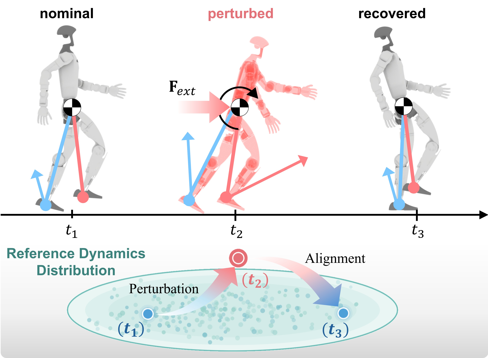
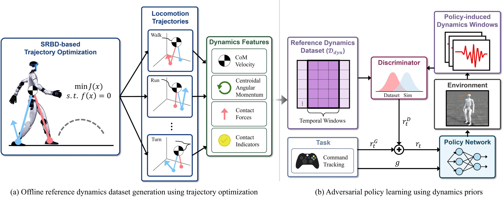
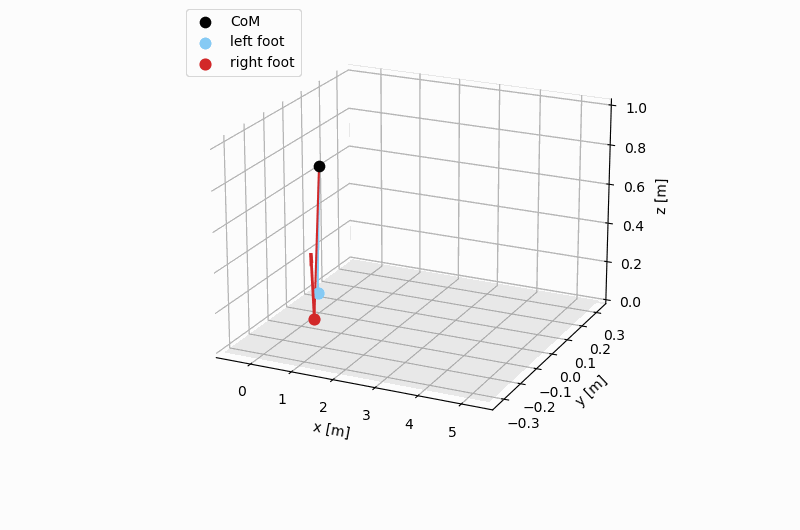
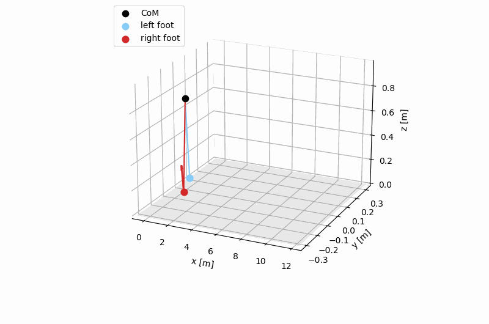
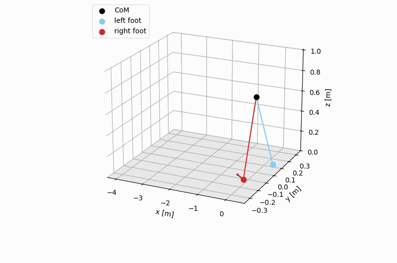
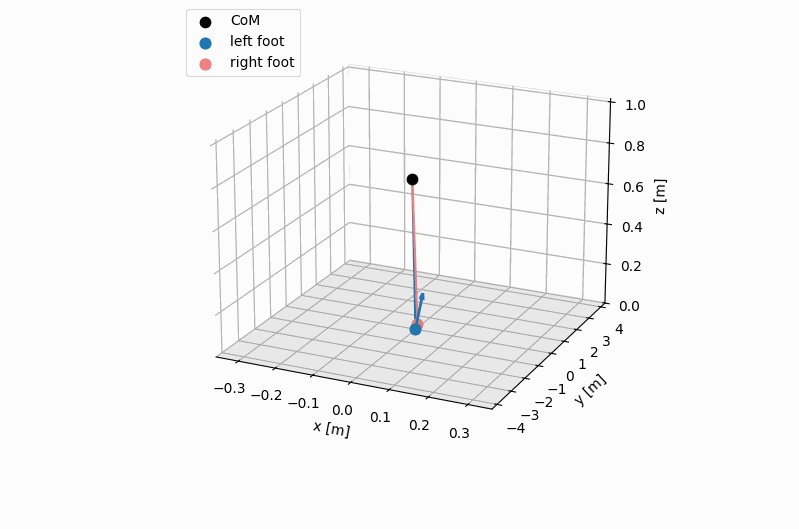
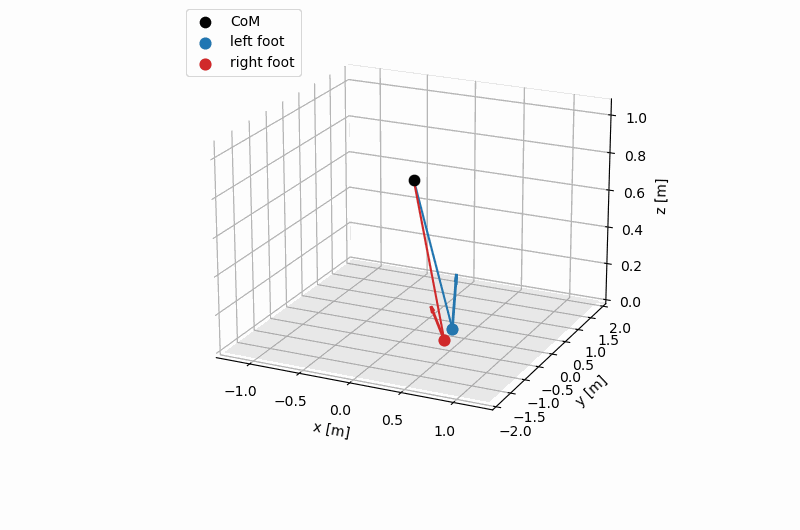
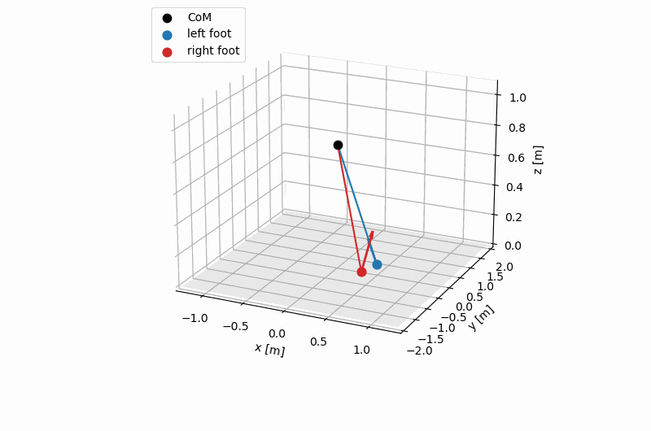
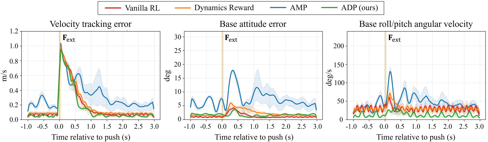
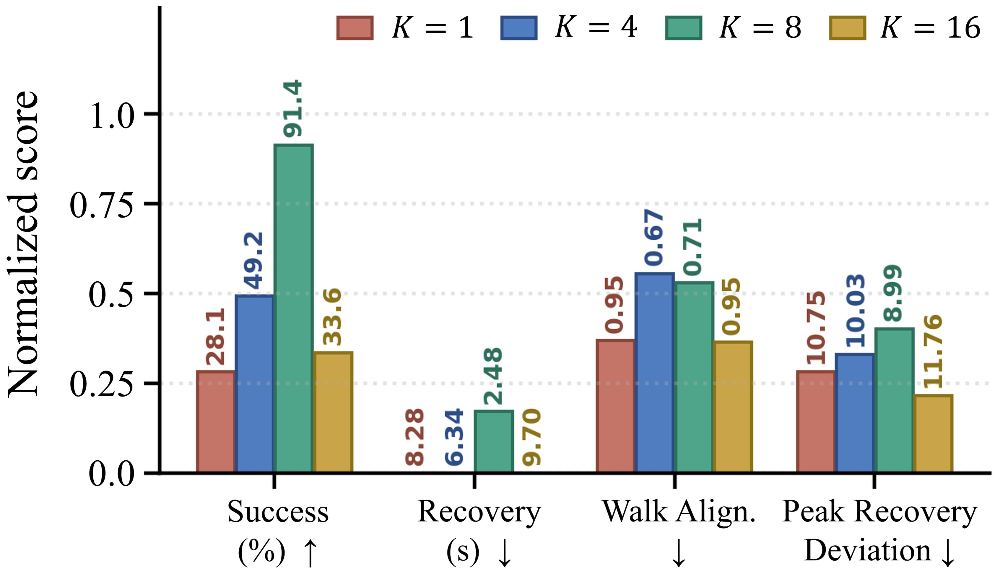

Dynamics-feature alignment for perturbation recovery. An external push at t2 drives the humanoid's dynamics features away from the reference distribution. ADP regularizes the perturbed windows back toward this distribution, restoring stable locomotion at t3.
We propose Adversarial Dynamics Priors (ADP) for perturbation-resilient humanoid locomotion control. Existing motion prior-based methods induce natural motion styles by imitating kinematic motion features, but they do not directly regularize dynamics features such as CoM motion, centroidal momentum, contact forces, and contact states. To address this limitation, we replace the kinematic motion-style feature with selected dynamics features extracted from locomotion trajectories as the target of adversarial regularization.
We use trajectory optimization to construct a reference dataset and train a discriminator to evaluate whether policy-induced temporal windows are consistent with the resulting reference distribution. Without explicit motion tracking, ADP encourages policy rollouts to remain close to the reference support, even after perturbations. Compared with AMP, the strongest baseline in our evaluation, ADP improves the 80%-success impulse threshold (J80) by 16.7%, while reducing direction-averaged recovery time and velocity-tracking error by 47.9% and 35.4%, respectively.
Full summary video walking through the method, hardware demonstrations, and simulation ablations.
ADP consists of two stages. (a) Offline, we use SRBD-based trajectory optimization to generate physically consistent locomotion trajectories and extract dynamics features — CoM velocity, centroidal angular momentum, foot contact forces, and contact indicators — to build the reference dynamics dataset Ddyn. (b) During policy training, temporal dynamics-feature windows are computed from policy rollouts and compared against Ddyn by a discriminator, whose output becomes the adversarial dynamics prior reward rtD.

ADP framework. (a) SRBD-based trajectory optimization generates reference locomotion trajectories, from which dynamics features are extracted to construct Ddyn. (b) During training, policy-generated windows are evaluated by a discriminator trained with Ddyn, yielding the dynamics prior reward rtD. The policy is trained jointly with the task reward, dynamics prior reward, and regularization terms.
The reference set is generated by SRBD-based trajectory optimization over multiple locomotion modes — forward walking, running, backward walking, lateral stepping, and turning — under fixed linear and yaw velocity commands. From each trajectory we extract dynamics features (CoM motion, centroidal momentum, contact forces, and binary contact indicators) that are physically grounded at the SRBD level without imposing full-body joint-tracking targets. The clips below show the resulting SRBD trajectories that populate Ddyn.






We compare four policies under identical PPO settings, observations, actions, domain randomization, and perturbation curriculum. The only difference is the imitation reward: no prior (Vanilla RL), point-wise dynamics matching (Dynamics Reward), adversarial kinematic style (AMP), and adversarial dynamics priors (ADP (ours)).

Time-series perturbation recovery under a lateral push. ADP (green) rapidly attenuates the transient velocity and attitude errors within ~1–1.5 s, stabilizing velocity error below 0.2 m/s and attitude error below 3°. AMP recovers velocity tracking but leaves under-damped residual attitude oscillations.
| Method | Succ. (%) ↑ |
J80 (N·s) ↑ |
Recov. (s) ↓ |
Vel. Err (m/s) ↓ |
|---|---|---|---|---|
| Vanilla RL | 5.5 | 49.5 | 10.52 | 2.89 |
| Dynamics Reward | 14.1 | 66.0 | 9.73 | 2.68 |
| AMP [12] | 73.4 | 99.0 | 4.76 | 1.30 |
| ADP (ours) | 91.4 | 115.5 | 2.48 | 0.84 |
ADP achieves the highest success rate and J80 while cutting recovery time by 47.9% and velocity error by 35.4% versus AMP.
We qualitatively evaluate ADP on a Unitree G1 humanoid under two disturbance regimes: instantaneous impulses (single, sharp pushes) and continuous pushes (prolonged, sustained force). We compare against AMP under the same reference-trajectory source, so the difference isolates the effect of the dynamics prior versus the kinematic motion-style prior.
The dynamics-feature representation exposes perturbation-induced transients earlier and more strongly than kinematic features. Under the same lateral push, the normalized deviation in the dynamics space (ddyn(t)) reaches 6.0× its pre-push baseline within 20 ms, whereas the kinematic representation (dkin(t)) reaches only 4.3× with a 160 ms rise time. Impulses excite floating-base momentum and contact forces before the effect is expressed through joint kinematics, giving the discriminator a sharper training signal.
| Representation | Peak fold ↑ |
Rise 50% (ms) ↓ |
Post AUC ↑ |
Sep. AUC ↑ |
|---|---|---|---|---|
| Kinematic | 4.3× | 160 | 2.2 | 0.98 |
| Dynamics ours | 6.0× | 20 | 3.9 | 1.00 |
Under a lateral 3.0 m/s push, the dynamics representation reacts 8× faster and with a 1.4× larger peak deviation than the kinematic representation.

Effect of temporal window length K. K=8 provides the best trade-off between temporal context and training stability (91.4% success, 2.48s recovery).
| Method | Succ. (%) ↑ |
Vel. Err (m/s) ↓ |
Dyn. Dist. ↓ |
Recov. (s) ↓ |
|---|---|---|---|---|
| ADP (full) | 91.4 | 0.84 | 1.13 | 2.48 |
| w/o Momentum | 45.3 | 1.92 | 3.04 | 6.74 |
| w/o Contact Force | 82.0 | 1.06 | 1.51 | 3.32 |
| w/o Contact Indicator | 30.5 | 2.36 | 3.82 | 8.82 |
Removing binary contact indicators degrades success the most (91.4% → 30.5%), showing that swing/stance transitions and contact timing carry the strongest alignment signal.
@article{lee2026adp,
title = {ADP: Adversarial Dynamics Priors for Physically Grounded Humanoid Locomotion},
author = {Lee, Seokju and Lee, Jeongtae and Lim, Jeonghyeok and Kang, Jeonguk and
Lee, Byungwook and Han, Seungho and Choi, Keun Ha and Park, Dongil and Kim, Kyung-Soo},
journal = {arXiv preprint arXiv:2607.03454},
year = {2026}
}